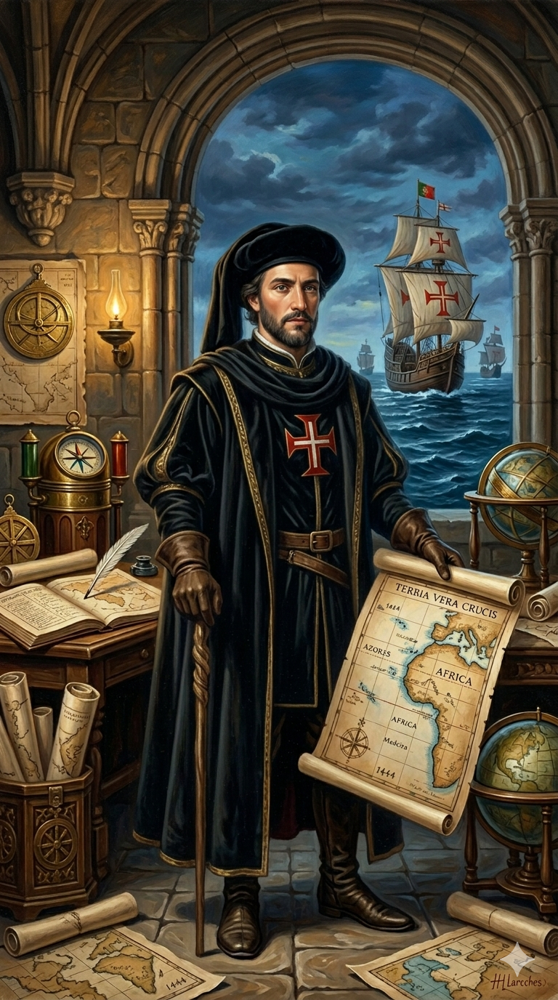

אנריקה "הספן"

לחץ על התמונה להגדלה
מקור ומשמעות השם המלא (אטימולוגיה)
תואר אצולה: אינפאנטה (Infante)
זהו תואר אצולה רשמי וחשוב בחצי האי האיברי, אשר הגדיר למעשה את מסלול חייו של אנריקה.
פירוש: המילה נגזרת מהלטינית "Infans" (ילד, צאצא). מבחינה פוליטית וחוקתית, התואר "אינפאנטה" ניתן אך ורק לבני ובנותיו החוקיים של המלך, מלבד יורש העצר הראשון (נסיך הכתר).
היותו של אנריקה האינפאנטה השלישי של המלך, שחררה אותו מהכבלים ומהאחריות הבלעדית של הכנה למלוכה (שכן הסיכוי שיירש את הכתר היה קלוש). חופש פוליטי זה הוא שאפשר לו להקדיש את כל זמנו, מרצו והונו לפרויקטים הימיים ולמלחמות הדת בצפון אפריקה, במקום לניהול השוטף של הממלכה.
שם פרטי: אנריקה (Henrique)
השם "אנריקה" הוא הגרסה הפורטוגזית לשם המוכר "הנרי" (באנגלית) או "היינריך" (בגרמנית), אשר מגיע משורשים גרמאניים עתיקים.
פירוש מילולי: השם מורכב משני שורשים מהשפה הפרנקית: "Heim" (בית, מולדת, אחוזה) ו-"Ric" (שליט, כוח, עוצמה). המשמעות היא "שליט הבית" או "מנהיג האחוזה".
הבחירה בשם זה לא הייתה מקרית. הוא נקרא כך על שם סבו מצד אימו, האציל האנגלי ג'ון מגוֹנְט (John of Gaunt), שהיה דוכס לנקסטר ואחד האנשים העשירים והחזקים ביותר באירופה באותה תקופה. הבחירה בשם חיזקה את הברית הפוליטית והמשפחתית החשובה בין פורטוגל לאנגליה.
הכינוי: "הספן" (The Navigator / O Navegador)
זהו אחד הפרדוקסים והמיתוסים (אירוניה) הגדולים ביותר בהיסטוריוגרפיה של עידן התגליות.
למרות הכינוי המהדהד המוכר בכל העולם, אנריקה עצמו מעולם לא היה ספן, נווט, או חוקר ימי! למעט שלוש הפלגות קצרות וקרובות לחופי צפון אפריקה (למטרות מלחמה בלבד), הוא מעולם לא חצה אוקיינוס, לא השתתף במסעות גילוי, ולא ניווט ספינה בלב ים.
יתרה מכך, הכינוי "אנריקה הספן" כלל לא היה קיים בימי חייו בפורטוגל. הוא הומצא רק במאה ה-19 (בשנת 1868) על ידי היסטוריונים בריטיים (בעיקר ר.ה. מיג'ור), וקרם עור וגידים בספרות הרומנטית הבריטית. הם העניקו לו את התואר כמטפורה – הוא היה ה"ספן הראשי" במובן הרעיוני, זה שהגה, ניהל, מימן, וניווט את מפעל התגליות הפורטוגלי ממשרדו הבטוח שביבשה.
ילדות, שושלת אביש והכוח של "מסדר ישו"
האינפאנטה אנריקה נולד בפורטו בשנת 1394, וסיפורו מתחיל בברית פוליטית אסטרטגית שכוננה מחדש את פורטוגל. אביו, המלך ז'ואאו הראשון, היה מייסד "שושלת אביש" (Aviz), אשר ייצבה את עצמאות פורטוגל אל מול האיום המתמיד של שכינתה החזקה, קסטיליה (ספרד). אימו הייתה הנסיכה האנגלית פיליפה מלנקסטר (הדמות שהביאה את המסורת והמשמעת האנגלית לחצר הפורטוגלית).
אנריקה הצעיר גדל בחצר מלכות תוססת, אך כבן שלישי, הוא גודל וחונך על ברכי אידיאלים של אבירות נוצרית, סגפנות, ומלחמה למען הדת. הוא הושפע מאוד מקריאת ספרי חצר על לוחמה במורים (המוסלמים) ועל מעשי גבורה.
המשרה הזו לא הייתה רק תואר כבוד דתי. היא העניקה לאנריקה שליטה במשאבים כלכליים אדירים, הכנסות חקלאיות עצומות, ופטור ממיסים. יתרה מזאת, היא נתנה לו לגיטימציה דתית עליונה. לא בכדי, הצלב האדום והמפורסם של מסדר ישו התנוסס בגאון על מפרשי כל ספינות התגליות (הקרוולות) שלו. העושר העצום הזה הוא שאיפשר לאנריקה להמר ולממן את משלחות החקר היקרות והמסוכנות ששלח לאורך חופי אפריקה במשך עשורים.
אידאולוגיה ומניעים: הצלבן הכלכלי שמאחורי הקלעים
חשוב להבין שאנריקה לא היה "איש רנסנס" מודרני המונע מסקרנות מדעית טהורה, אלא אציל בעל מנטליות ימי-ביניימית מובהקת. חזונו שילב פנאטיות דתית של מסעי צלב עם ראייה כלכלית פורצת דרך, שהתבססה על שני עמודי תווך:
1. עקיפת המונופול המוסלמי ושליטה בזהב (מסע הצלב הכלכלי): בתחילת המאה ה-15, פורטוגל הייתה מדינה קטנה, ענייה באוכלוסין ובמשאבים, הנדחקת לשולי האוקיינוס. הכלכלה העולמית, ובמיוחד הסחר בזהב, בתבלינים ובעבדים, נשלטה על ידי האימפריות המוסלמיות בצפון אפריקה והמזרח התיכון, ששלטו בשיירות הגמלים שחצו את מדבר הסהרה. החזון הגאוני של אנריקה היה לאלגף אותם: להפליג *מסביב* למוסלמים דרך הים, ולהגיע ישירות למקורות הזהב ב"גינאה" (אפריקה שמדרום לסהרה). בכך, הוא ינתק את נתיבי האספקה של אויביו המוסלמים ויעשיר את קופת הממלכה והמסדר שלו.
2. החיפוש האובססיבי אחר "פרסטר ג'ון" (Prester John): כנוצרי אדוק ונגיד מסדר דתי, המניע העליון של אנריקה היה הבסת האסלאם. הוא, כמו רבים בני דורו, האמין בכל ליבו באגדה על "פרסטר ג'ון" – מלך נוצרי מיתולוגי, חזק ועצום, ששולט בממלכה אבודה אי שם בלב אפריקה או בהודו (החוקרים מאמינים היום שהאגדה צמחה על בסיס קיומה של הקיסרות הנוצרית באתיופיה). המטרה האסטרטגית של משלחותיו הייתה למצוא את הממלכה הזו, לכרות ברית אסטרטגית עם צבאו העצום של פרסטר ג'ון, וכך ליצור תנועת מלקחיים (איגוף) על העולם המוסלמי במטרה הסופית לשחרר את ירושלים מידי הכופרים.
הפרויקט המדעי: סאגרש (Sagres) והמצאת הקרוולה
התרומה העצומה של אנריקה לעולם הייתה הפיכת ההרפתקנות הימית מאקט אקראי ונועז של קברניט בודד, לתוכנית מחקר, פיתוח ואיסוף מודיעין (R&D) ממוסדת ורציפה בחסות המדינה.
למרות שההיסטוריוגרפיה המודרנית טוענת שלא היה זה "בית ספר" אקדמי ממוסד עם כיתות ומורים כפי שנהוג לחשוב במיתוס הרומנטי, זה בהחלט היה מרכז לוגיסטי וחצר פטרונים (Think Tank). בסאגרש נאסף מידע מסווג מכל ספינה שחזרה: נתוני זרמים, מיפוי חופים, מדידות רוחות, ושכלול האצטרולב והמצפן. המידע עובד והועבר הלאה למשלחת הבאה.
הקרוולה הייתה ספינה קטנה יחסית, ארוכה, מהירה ובעלת שוקע רדוד (המאפשר התקרבות לחוף ולשפכי נהרות). פריצת הדרך הטכנולוגית שלה הייתה המפרש הלטיני (Latten Sail) – מפרש משולש שאיפשר לספינה לתמרן ו"לשבור" את הרוח, כלומר, לשוט בזווית נגד כיוון הרוח (Tacking). בלעדי הקרוולה, ההקפה של אפריקה, מסעותיו של קולומבוס, וכל עידן התגליות פשוט לא היו יוצאים לפועל טכנית.
הישגים, גילויים והכיבוש הפסיכולוגי של האוקיינוס
הפרויקט המפעל של אנריקה ידע עליות ומורדות לאורך למעלה מארבעים שנה, אך יצר תשתית שלא ניתן היה למחוק:
אנריקה, בעקשנות אובססיבית, שלח 14 משלחות בזו אחר זו שנכשלו וחזרו הביתה בתירוצים שונים מאימת המקום. לבסוף, בשנת 1434, הוא הטיל את המשימה על נווט מבריק מטעמו, ז'יל איאנש (Gil Eanes). איאנש ביצע תמרון של אומץ אדיר: במקום לשוט לאורך החוף המפחיד והשרטונות, הוא התרחק אל הלב הסוער של האוקיינוס האטלנטי הפתוח, עקף את הכף מצד מערב (בקשת רחבה), וחזר צפונה כדי להוכיח שהים נשאר אותו ים, אינו רותח, ושניתן לחזור.
מרגע שבירת המחסום הפסיכולוגי הזה, ההתקדמות לאורך חופי אפריקה הואצה דרמטית, והדרך למסעותיהם של דיאש ודה גאמה נסללה סופית. אנריקה נפטר ב-1460, הרבה לפני שספינותיו הגיעו להודו, אך הוא היה האדריכל שהקים את הפיגומים.
מקורות וביבליוגרפיה (אימות מחקר)
- "כרוניקה של גילוי וכיבוש גינאה" (Gomes Eanes de Zurara, 1453): זהו המקור הראשוני (הכרוניקן הרשמי) והחשוב ביותר מתקופתו של אנריקה. הספר נכתב בהזמנת החצר כדי לפאר ולרומם את אישיותו של הנסיך ולתעד את השלבים הראשונים של המסעות לאפריקה ואת תחילתו של סחר העבדים באטלנטי.
- ניפוץ מיתוסים וביוגרפיה ביקורתית: Russell, Peter E. (2000). Prince Henry "the Navigator": A Life. (ספר מחקר מקיף המפריד בין הדימוי הרומנטי של "מדען הים" כפי שהצטייר במאה ה-19, לבין דמותו המורכבת כאציל אכזר, חייל ונגיד דתי אובססיבי, שניסה לקדם מסעות צלב).
- חקר התפתחות הקרוולה: Smith, Roger C. (1993). Vanguard of Empire: Ships of Exploration in the Age of Columbus. (מנתח בפירוט את השפעת הבסיס בסאגרש על המעבר מספינות חופיות קטנות לספינות מפרש אוקייניות מתקדמות המותאמות לסערות ולרוחות נגדיות).